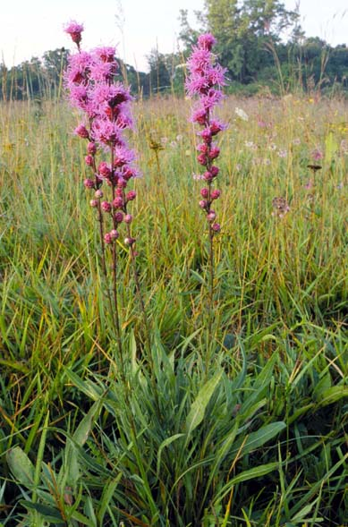
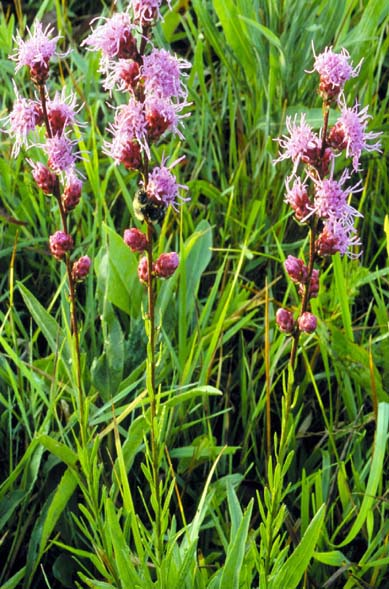
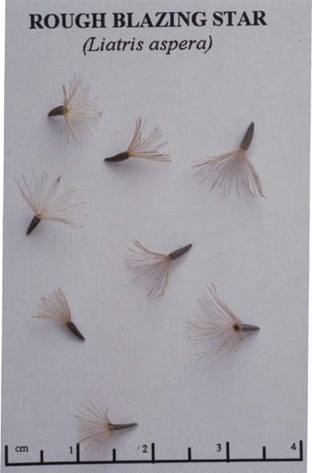
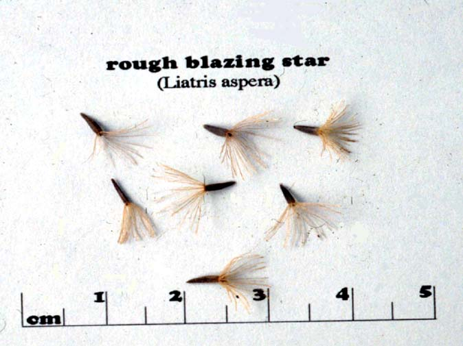

Liatris Aspera
Family: Asteraceae
Rough Blazing Star
Swink/Wilhelm #6




Click to view larger photo
FLOWERING: Mid-August through September
SEED TIMING: October to November
HABITAT: Mesic to dry prairie and dry savanna
DIAGNOSTIC FEATURES: 2 - 4 feet. Erect spike with numerous, purple, button-like, stalkless flower heads blooming from the top down. Leaves are alternate, numerous, rough, and narrow along the entire stem.
TO PICK: Seeds form fluffy pappus. Pick when pappus is fluffy and brownish at bottom of stalk. This will have allowed previously ripened heads at top to disperse seed on the site.